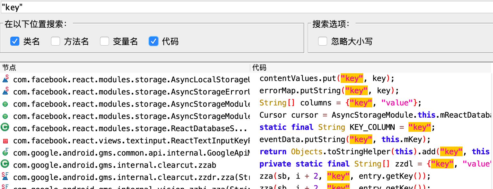
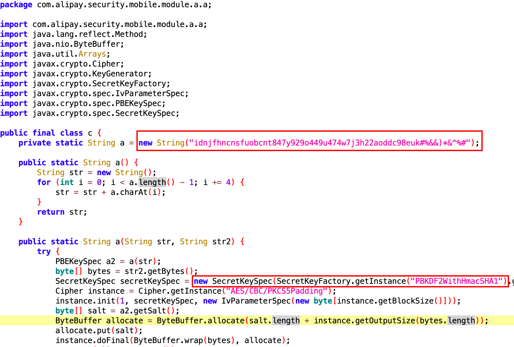
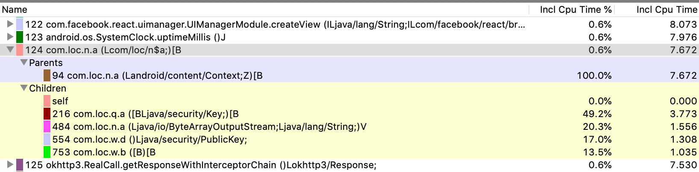
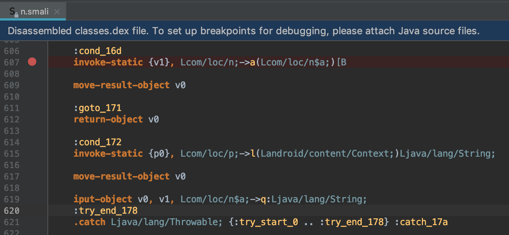
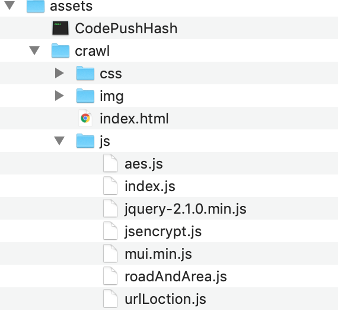

App渗透再次遇到加解密，并且这次具体分析与以往状况有点不太一样，于是记录下来。
前言
App渗透再次遇到加解密，并且这次具体分析与以往状况有点不太一样，于是记录下来。
抓包分析
1 | POST /app/fsOrder/getAllFsOrderListByUser/ HTTP/1.1 |
可以看到请求包中数据都做了加密，分别有”data”和”key”两个字段。可以大胆猜测data为请求的数据，而key应该是加密data的密钥。惯用手段是用随机值作为key加密数据作为data，而这个随机值key又以一种固定密钥的加密方式加密之后一并附加到请求包中。而这里明显key的字段远远长于data字段，明显是两种很不一样的加密算法，而返回包也差不多。
1 | HTTP/1.1 200 OK |
逆向分析Java代码
关键词搜索
因为key和data比较常见搜索结果肯定大多都是第三方SDK的引用，先搜索一下路由getAllFsOrderListByUser，奇怪的是并没有任何搜索结果。于是只能搜索”key”和“data”，果不其然搜索结果都太多了。

多归多正常来说都能在搜索结果找到一些蛛丝马迹，但是这里发现全都是第三方SDK的引用，仔细一看发现主程序的代码少得可怜，并且注意到MainActivity继承了facebook的ReactActivity。
1 | import com.facebook.react.ReactActivity; |
再结合assets资源目录来看这个app是采用了Hybrid开发模式，部分逻辑写在了javascript上。但这也不意味着加解密就一定在js上面，Google了一下好像还有js调用Android接口的说法，所以这个真的不好直接判断。
但无论如何还是先从Java代码找起，搜索一下常见的加解密函数字段AES、DES、RSA等

alipay.security里的Cipher加解密吸引了我，而且这里还有一些硬编码字段，一度让我以为这就是密钥。追踪一下函数的调用关系，似乎没有找到调用的痕迹，继续分析也无果。
方法剖析Method Profiling
避免其他函数的混淆，我在登陆过程中抓取函数调用栈，看了很久看到com.loc.n.a，这里似乎有调用什么方法进行加解密（特别这种命名不清不楚的函数更让人值得关注）

根据Method Profiling调用栈可以清晰的找到函数调用和被调用关系，这种方式我觉得是定位函数最实在的方法。在分析的时候发现某个函数没法正常反编译成java代码。
1 | a(r2, r0) // Catch:{ Throwable -> 0x00ed } |
动态调试
突然被问到为什么不直接动态调试因为apk没有也加固，一调试就知道是不是在java层做加密了，于是根据Method Profiling定位到的函数下断点调试

但是奇怪的是再次点击登陆居然没有断下来！Method Profiling抓取到的讲道理应该一定有被调用才对。
到这里大概可以确定加解密是在前端而不是android里面实现了，但是不死心我还是Hook来验证一下，直接hook Javax的Cipher函数，如果有调用的话日志应该就会打印Cipher加密的方式以及密钥key，然而无果。
前端JavaScript分析
搜索
如果真的确定加解密函数在Javascript代码里面的话，事情就变得简单起来了（其实也没有很简单）。对javascript不是特别熟悉，并且也没有办法动态调试Javascript，没有可靠的定位函数的方法，所以也能靠瞎几把搜索。如果对javascript比较熟悉其实可以根据javascript加解密函数名去搜索，大概会稍微比较快，而我这里先根据文件名来看比如这里的jsencrypt.js。

还好这里JavaScript代码不是特别多，结合grep和find全局搜索一下文件名和函数定位到了utils.js
1 | .//assets/netCar/js/utils.js:function AESencrypt(text,key) { |
并找到了加解密函数以及RSA publicKey和secretKey同时硬编码在js文件里
1 | function AESencrypt(text,key) { |
加解密逻辑
1 | var timeS = new Date().getTime(); |
1 | success: function (data, status) { |
细节分析
rsaEn.setPrivateKey(rsaPubKey) RSAEncode这里用公钥作为私钥encode了，一开始没注意还真就用了私钥尝试去解。
这里逻辑也很明了，发包的数据用13位的timestamp+”123”作为密钥key进行AES ECB加密，并且将AES的key进行RSA加密发送到服务器。返回包中，先RSA解密key字段获取AES加密的key，再对data字段进行AES解密。
本地js找加解密的时候也猜想过一种情况，客户端有没有可能先从服务端获取加解密的js文件（这样本地也找不到加解密函数）。为了排除这种想法，要仔细看burp抓取的数据包，有没有对应的js文件。
又能愉快的对移动app进行渗透测试了。